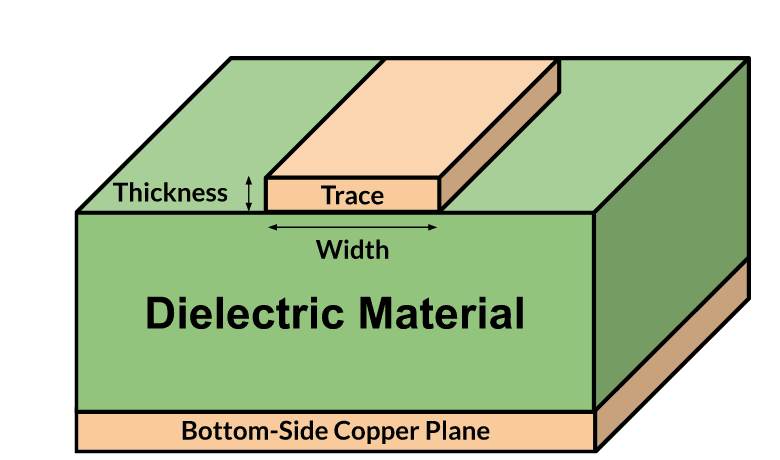
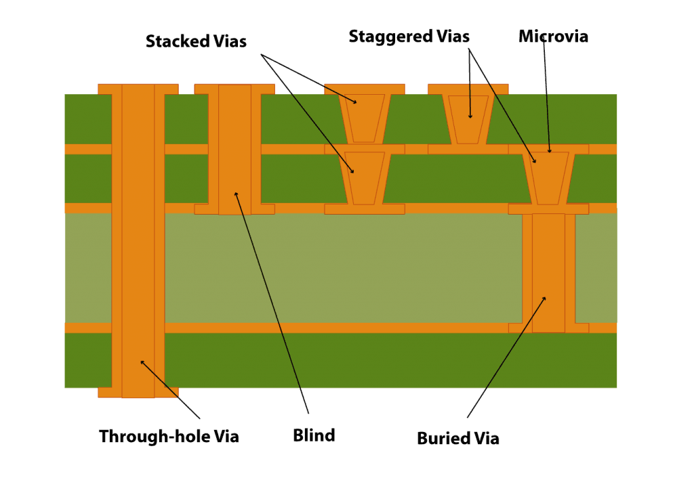
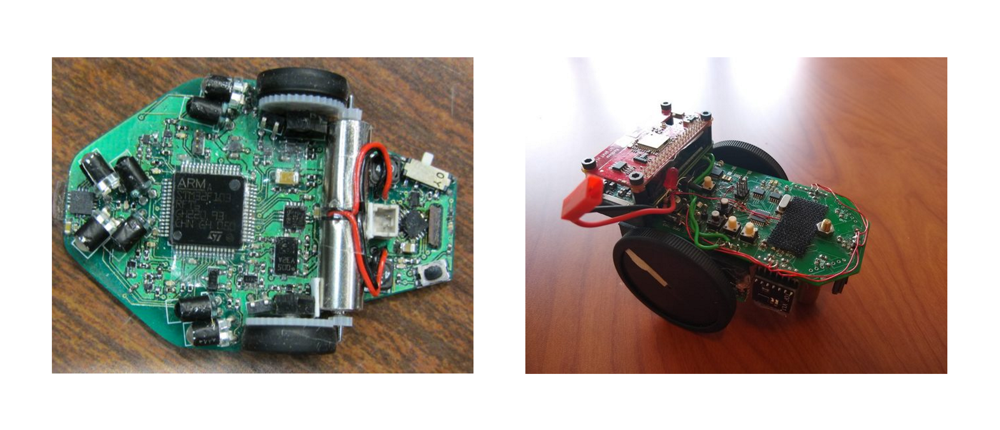
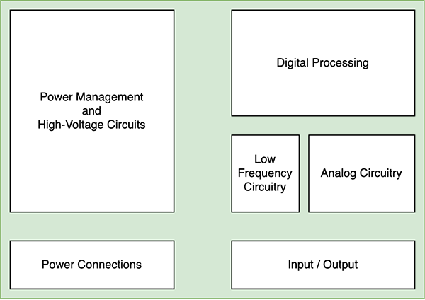
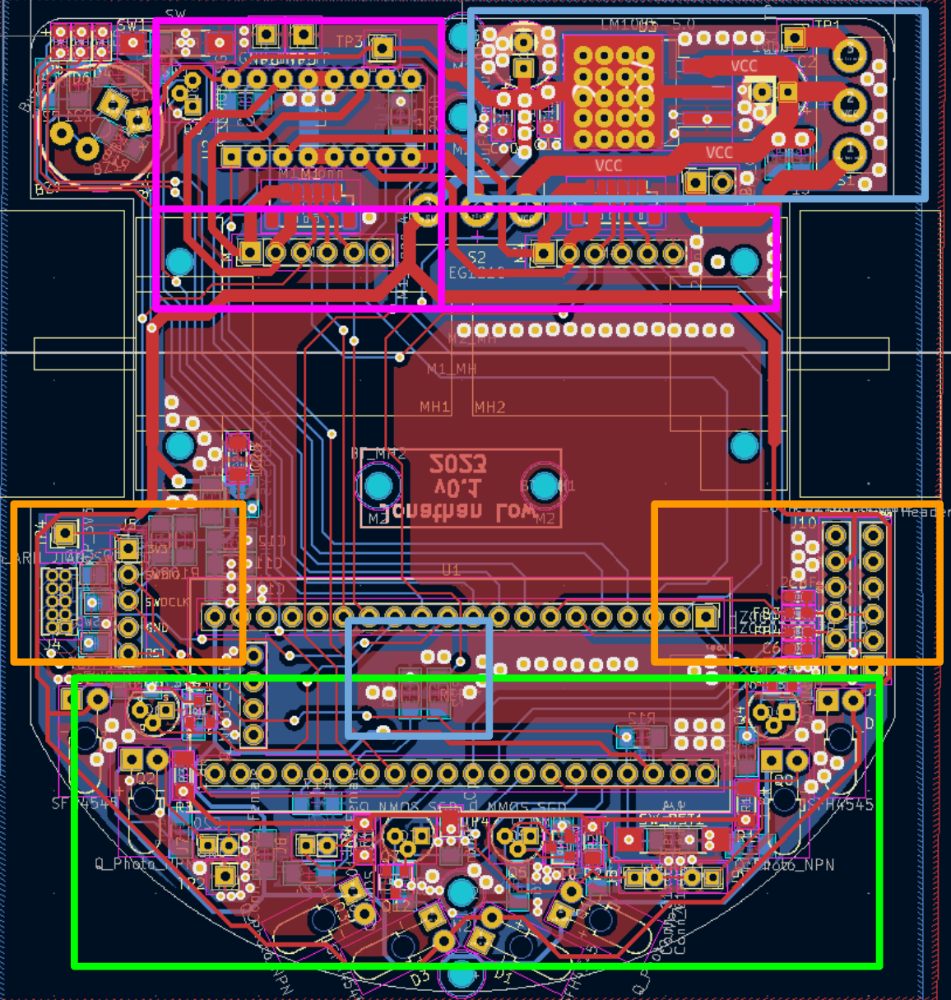
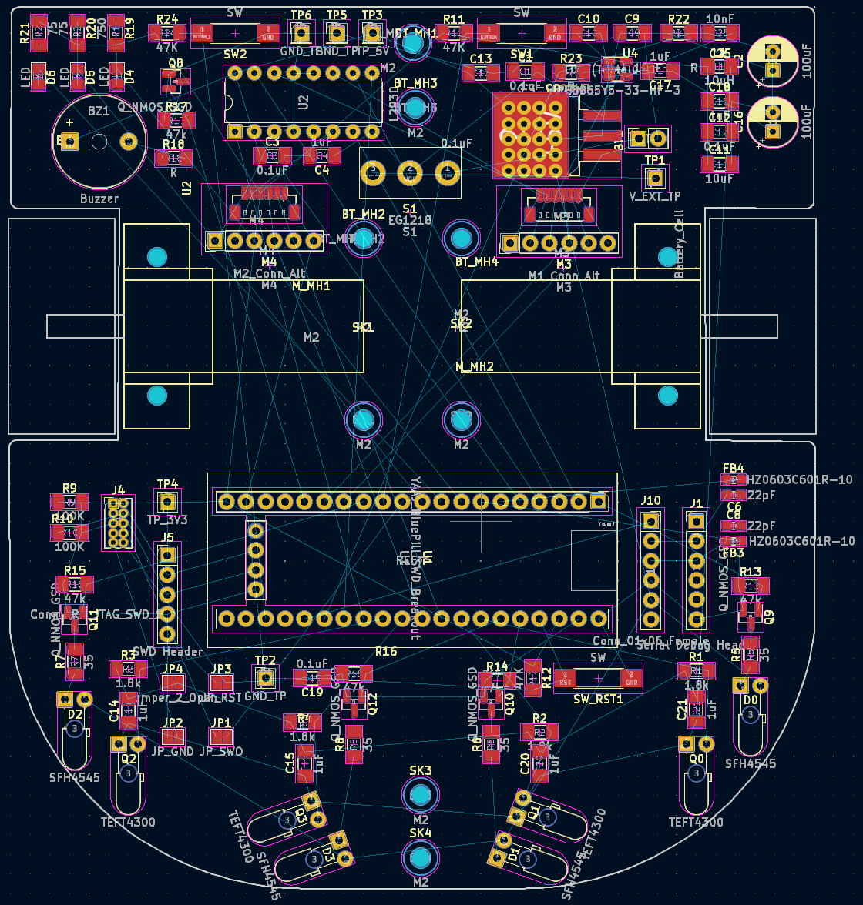
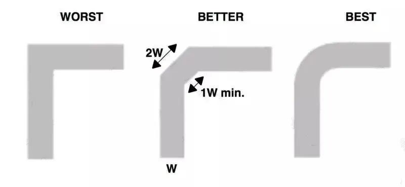

KiCad Guide
By Colton Kaneria
Introduction
You may have explored circuit design and prototyping through breadboards and perfboards. This time, you
will explore the
manufacturing of more sophisticated circuit prototypes and finished products: You will create a
printed circuit board
(PCB) for your Micromouse with the software KiCad.
When electronics are more complex or are ready for production, we typically use printed
circuit boards or PCBs. Nearly
every device, from a digital alarm clock to laptop computer, uses a PCB. It is a board designed
with CAD software that
connects individual components.
Benefits of PCBs
The benefits of PCBs over prototyping boards are numerous. Here are a few:
- They are a compact interface between electronic components, holding components together and connecting them to each other.
-
They are more reliable because they reduce the following issues:
- Manufacturing process issues
- Electromagnetic Interference (EMI)
- Thermal issues
- They are much easier to hand solder.

PCB Design Overview
When it is time to design your PCB, there are two major components of the operation: (1) Schematic capture - converting your prototyped design and circuit drawings into a digital schematic. (2) PCB Layout Design - placing components and routing conductive tracks in a virtual layout of your PCB. You can learn exactly how this process works in the KiCad EDA software by viewing our PCB Design with KiCad workshop material here.
Installing KiCAD 9.0
To complete this project, you will download the PCB design software KiCad (version 9.0.3).
| Windows | Download |
| Mac | Download |
- Download the installer from the link appropriate to your OS.
-
Launch the installer. Click Next.

-
When the Choose Components dialog appears, make sure all but the “Help files”
components are selected. Then, click Next.

-
Select the Install Location. The default setting is usually acceptable. Then,
click Install.

- The installation is complete! The fun starts now.
Schematic Layout
Overview of Schematic Development
Below is the general procedure when creating a schematic:
- Add symbols to represent components.
- Assign footprints to symbols.
- Connect components together with wires.
- Verify the design with the Electrical Rules Checker (ERC).
Creating a Schematic
-
Open KiCad 9.0 to launch the Project Manager and create a new
project. Name the project.

-
Now that you have created a project, open the Schematic Editor (or press
Ctrl+E, Mac: ⌘+E) to launch the schematic
capture application.

Adding Components
-
Click on Add Power Symbol
 (or
press P) to add the
+9V (VCC) and Earth schematic symbols.
(or
press P) to add the
+9V (VCC) and Earth schematic symbols.
 Need to zoom in or out? Use the mouse scroll wheel or select one of the following options from the menu bar at the top of the application:
Need to zoom in or out? Use the mouse scroll wheel or select one of the following options from the menu bar at the top of the application:
-
Click on Add Symbol
 (or press A) and add each of the schematic
symbols listed in the Parts section of the
project
specification.
(or press A) and add each of the schematic
symbols listed in the Parts section of the
project
specification.
 Moving Symbols: You can move symbols by selecting them, then holding down the left mouse button, and moving the cursor. You can also select the symbol, press M, then move the cursor.
Moving Symbols: You can move symbols by selecting them, then holding down the left mouse button, and moving the cursor. You can also select the symbol, press M, then move the cursor. -
If a symbol is in the
wrong orientation right
click on the component and select Rotate Counterclockwise (or press
R) to rotate it 90 degrees
counterclockwise.

-
For each valued component (resistors, capacitor, LED), right click on the component, and select
Properties (or press E).
Edit the Value field in the Symbol Properties dialog to be the corresponding component value in Ohms, Farads, etc. The value scheme is as follows:
The value scheme is as follows:
{base value} {scale} {unit}
scale (power of 10): p: 10-12, n: 10-9, u: 10-6, m: 10-3, k: 103, M: 106, G: 109
unit: Capacitors: F, Inductors: H, Resistors: None
Ex. A capacitance of 1*10-6F would be denoted as 1uF.
In this example, {base value = 1} {scale = u} {unit = F}
Assigning Footprints
A footprint, as the name suggests, is the physical layout of a component.
It specifies whether a component is surface mounted or through hole and shows how much space the component takes up on the board.
It is important to select the correct footprints in the schematic designer so your actual components are compatible with your PCB.
For example, if you incorrectly select a SMD footprint for your through hole resistor, you will not be able to solder it onto the board!
(... okay, unless you get creative ...)
-
Open the Footprint Assignment
 tool. For each component symbol, assign a
footprint.
tool. For each component symbol, assign a
footprint.
After assigning each component, select Apply, Save Schematic & Continue to save your progress. After footprints are assigned to symbols, you can copy (Ctrl+C, Mac: ⌘+E) and paste (Ctrl+V, Mac: ⌘+V) symbols and their footprint assignments will be copied over as well
After footprints are assigned to symbols, you can copy (Ctrl+C, Mac: ⌘+E) and paste (Ctrl+V, Mac: ⌘+V) symbols and their footprint assignments will be copied over as well
Wiring
-
Complete the circuit defined by the provided schematic. Select the Wire
 button
(or press W) to create connections
between components and other wires. Connections between two wires are indicated by a dot.
button
(or press W) to create connections
between components and other wires. Connections between two wires are indicated by a dot.

-
Add net labels
 to
avoid crossing wires. Net labels are basically invisible
connections; they help clean up the
schematic.
to
avoid crossing wires. Net labels are basically invisible
connections; they help clean up the
schematic.

-
Add no-connection flags
 to indicate which pins/leads are to be left
unconnected. This is important for when we run
verification tools later.
to indicate which pins/leads are to be left
unconnected. This is important for when we run
verification tools later.

Annotating the Schematic
Every component needs a unique name. Otherwise, the manufacturing files will have no way to distinguish between components of the same type. Your schematic may have a bunch of components with "?" at the end, such as "R?" or "C?" This is because they haven't been numbered yet. The Annotate Schematic tool automatically assigns numbers to any components missing one. So all your components will have a name like R1, R2, C1, or C2, etc.
-
Open the Annotate Schematic
 tool and select Annotate to name
the remaining symbols which have been marked erroneously
with “?”.
tool and select Annotate to name
the remaining symbols which have been marked erroneously
with “?”.

Running ERC
The last step in schematic layout is to verify the circuit using the Electrical Rules Checker tool, also known as the ERC. This will catch any errors in your schematic, such as pins being left unconnected. Errors will be listed in the popup window and annotated with red arrows on the schematic itself. You can also click on the errors in the popup window to be directed to them in the schematic.
-
Open the Electrical Rules Check (ERC)
tool
 and select Run ERC
and select Run ERC
 There should be no violations except for Error: Input Power pin not driven by any Output Power pins.
There should be no violations except for Error: Input Power pin not driven by any Output Power pins.
PCB Layout
Now that we've finished the schematic for the mouse, it's time to design the physical printed circuit board.
Overview of PCB Layout
Below is the general procedure of PCB layout:
- Update the PCB layout from the schematic.
- Create the board outline.
- Place components.
- Run the Design Rules Checker (DRC).
- View the PCB in the 3D viewer.
Terminology
Traces or tracks are the copper wires on the PCB. They connect components that are wired together on the schematic. They are very thin strips of copper on top of the PCB, as seen in the cross section on the below.

Vias are holes in the PCB that connect traces from one layer to another. As the designer, you determine how deep each via is and which layers it connects together. A few examples of vias are shown in the cross section below.
Transfer Footprints to PCB
Initially, your PCB layout file will be blank. You will need to update this PCB layout file with your components and connections from the schematic.
-
Return to the Project Manager window and open the PCB Editor
(or press Ctrl+P, Mac: ⌘+P).

-
Though this step is not required for your project, you can configure the stackup and add
manufacturer design constraints
by selecting File → Board settings

-
To generate the components specified by your schematic, open the Update PCB
 tool (or press F8) and select Update PCB
tool (or press F8) and select Update PCB
The component footprints will then be generated and follow your cursor until you left click to confirm their initial placement.
Setting Track and Via Sizes
-
Now, you need to set the track and via sizes. Disable the Use Existing Track
Width..
 option by
selecting the button until it is no longer highlighted. Then, open the Track use
netclass width
dropdown and select Edit Pre-defined Sizes
option by
selecting the button until it is no longer highlighted. Then, open the Track use
netclass width
dropdown and select Edit Pre-defined Sizes
Here is an example of added pre-defined sizes:
In general, traces for power and ground lines should be thicker than traces for signal lines.Tracks (Width) Vias (Diameter/Hole) 0.5 mm 1 mm / 0.6 mm 0.3 mm
Please refer to the Micromouse PCB Guidelines at the end of this page for all specific trace widths.
Click the Track use netclass width and Via use netclass sizes dropdowns and select one of the newly populated options. (Change between the options as necessary when you route the traces.)
Board Outline
Your PCB board outline can be any size 100mm x 100mm or less. Any odd shape within this 100mm square will suffice. Below are a few examples.

-
Create the board outline. Select the Edge.Cuts layer then use one of the shapes
tools to create the outline. Remember to
return to the F.Cu (Front Copper) layer when done.

Organizing Your Components
As you may have noticed from the schematic, your PCB will have a lot of components.
It is best to organize your components into subcircuits.
This makes your board easier to troubleshoot because you can easily locate components.
Grouping related components together also makes your traces shorter, meaning they will have less impedance.
Below is an example of component grouping you many want to incorporate into your placement.

Here's an example of a Micromouse with its components organized into clear subcircuit areas. Your Micromouse does not have to match this design exactly, but it is recommended you place components in the same general areas. For example, the sensors should be placed in the front of the mouse to detect walls in front of and to the sides of the mouse.
- Blue: High voltage - hot!
- Pink: Motor
-
Orange: Header pins/buttons/LEDs
(things you frequently interact with) - Green: Sensors (IRs)

Routing
-
Space out your components a reasonable distance and create the traces. Select Route Tracks
 (or press X) and begin
drawing traces between pads which are connected by the
ratsnets.
(or press X) and begin
drawing traces between pads which are connected by the
ratsnets.
 Remember to change the trace width according to the type of signal. Power/Ground lines should have larger width than signal lines.Leave the ground pads unconnected.Pro tip: Avoid routing traces with 90 degree angles, and use 135 degree tracks instead.
Remember to change the trace width according to the type of signal. Power/Ground lines should have larger width than signal lines.Leave the ground pads unconnected.Pro tip: Avoid routing traces with 90 degree angles, and use 135 degree tracks instead.
Ex. The connection between NE555P Pin 6 to C1 Pin 1 maintains a 135 degree track. -
In the event two traces on the same layer must cross paths, you may instead create one of the
traces on the B.Cu (Back
Copper) layer.
Use the Add Via tool (or press
Ctrl+Shift+V, Mac:
⌘+Shift+V) to place vias which may connect traces of different layers.
(or press
Ctrl+Shift+V, Mac:
⌘+Shift+V) to place vias which may connect traces of different layers.

Routing Tips
Traces act as wires between components. The wider they are, the greater the current that flows through.
Hence, traces for components with higher current draw should be wider to support the higher current.
As a general rule of thumb ...
-

All traces should:- Be as short as possible
-
Have 135° bends
- The trace width throughout a turn is most homogeneous when the turn is not a jagged 90° angle. Ideally, it would be best to make all of these bends circular, but 135° bends are sufficient.
-
Traces for differential pairs should be equal length.
- Differential pair signals are to be interpreted together, meaning they must leave one component and arrive at their destination component at the same time. This is only possible if the traces are equal length.
- Traces for high speed signals should be routed on the same layer.
Lastly, for your design, it is best to space your traces 0.25 mm apart from each other. This prevents crosstalk, or signal interference from one trace to another.
Please refer to the PCB Guidelines at the end of this page for the specifications of how to make your PCB. This includes the exact widths for each of your traces and which components
Ground Fill Zone
You're probably wondering what we're going to do about all the unconnected GND pads. We will connect them all together with a ground fill zone, or a ground plane. Any unconnected GND pads reached by this plane will all be connected together, allowing this plane to serve as the PCB's ground.
Here are a few benefits to using ground planes:
- Less EMI
- Less thermal issues
- Easier to ground components
- Lower impedance
-
With all but the ground pads connected, you will create the ground fill. Select Add Fill
Zone
(or press Ctrl+Shift+Z
Mac: ⌘+Shift+Z). A dialog will appear:
Select both the F.Cu and B.Cu layers as well as the Earth net. Then, select Ok.
Now, left click to draw the closed area in which the fill will be created.
When the fill zone is created, press B to fill.
Silkscreen
Silkscreen is how PCB designers add text and component labels to a board. This is a required
step for your Micromouse PCB design because when you troubleshoot the board, you should be able to easily
locate each component on the PCB if needed.
You should also add the name of your Micromouse team to the PCB, along with your names.
-
To add text to the PCB, select the F.Silkscreen layer. Then, use
the Add Text Item
tool
 (or press
Ctrl+Shift+T, Mac: ⌘+Shift+T) to generate and place textboxes
on the silkscreen.
(or press
Ctrl+Shift+T, Mac: ⌘+Shift+T) to generate and place textboxes
on the silkscreen.
Alternatively, you may write text to the back of the PCB by selecting the B.Silkscreen layer instead.
Running DRC
-
Now to verify the PCB layout. Open the Design Rules Checker (DRC) tool and
select Run DRC. There should be no
violations.
The most common causes of DRC issues are

- Unconnected items
- Courtyard overlap
- Silkscreen overlap
Generating Manufacturing Files
-
As a final checkpoint, you will generate the manufacturing files for your project. Select the
Plot tool. Then, choose an
Output directory. It should be a new folder called “gbr” in
your project folder.
Now, select Plot tool.
Then, select Generate Drill Files… to open a new dialog where you will select
Generate Drill Files
again.
tool.
Then, select Generate Drill Files… to open a new dialog where you will select
Generate Drill Files
again.
Close all the dialogs. You are done!
Micromouse PCB Guidelines
General
- 2-layer board if ordering with the program
- PCB must fit within 100x100mm square (would recommend drawing one before placing components and routing)
- GND plane on front and back layer
-
Ensure GND plane fills most of the board (do not leave large unfilled zones)
- To fill unfilled zones, use floating vias
- All general traces should be at least 0.3mm in width (specific exclusions mentioned later)
-
Silkscreen labeling
- Label important pin headers (eg. RX, TX, SWDIO, SWDCLK)
- Label all test points with corresponding name (eg. +3V3 or GND)
- Label battery positive and negative terminals
- Place test points towards the edge of the PCB
-
No trace bends smaller than 135° (unless you have a three-way trace intersection, which should be a 90°/135°/135° split)
- The straighter the traces, the better.
- Try to connect all through hole GND pads to both GND planes
- Mounting/skate holes should be 7.874mm center to center
- Place team name on either front or back silkscreen of the PCB
- Buttons should be pressable, it is advised to place them near the edge of the PCB
-
***For members using non-bluepill version: Place decoupling capacitors for STM32 chip near the chip
- Labeled C22-C28 (inclusive)
- PCB must fit within 100x100mm square (would recommend drawing one before placing components and routing)
- GND plane on front and back layer
- 2-layer board if ordering with the program
- PCB must fit within 100x100mm square (would recommend drawing one before placing components and routing)
- GND plane on front and back layer
Power Supply
- Place decoupling capacitors for +5V and +3V3 Regs. near the components output
- Trace widths for main power rails should be at least 1.25mm
- BT1-Net should be at least 2mm
- Power traces that route to specific components should be at least 0.5mm (larger for specific ones)
Motor Driver
- Motor driver output pads/traces (eg. M1_OUT_1) should be at least 0.5mm in width
- All motor driver pads, even if redundant, should be connected to their respective labelings
Motors
- Ensure mouse edge cut/outline does not overlap with motor footprint
- Motor footprint may go outside of the 100x100mm limit (which is fine)
IR Sensors / Analog
- AGND traces should be at least 1mm in width
- +3V3VA traces should be at least 0.5mm in width
-
Place IRs towards front of PCB with no blockage
- Ensure IR pairs are adjacent or stacked
After Running DRC
- Can ignore “Error: Clearance violation ...” for component JP4 (bridge from GND to AGND)
-
Can ignore “Footprint component type doesn’t match footprint pads…” for component U3, M1, and M2
If it appears for another component it is an error. - Resolve errors, if unsure try to look them up (if you can’t figure them out reach out to staff through Discord or during office hours/meetings)
- Submit for review!